1. Melody harmonization examples
The meaning of the labels in each figure are as follows (similar to Fig. 10 in the main manuscript).Melisma Melisma Music Analyzer (ver 1) by Sleator and Temperley
HMM HMM-based method
PCFG-US PCFG model obtained by unsupervised learning (Sec. V-A(i), K=12)
PCFG-SS-HMM PCFG model obtained by semisupervised learning with HMM-based initialization (Sec. V-A(iv), K=17)
GT Ground-truth chord labels in the AIST Annotation for the RWC Music Database
1.1
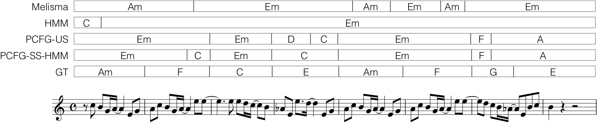
1.2
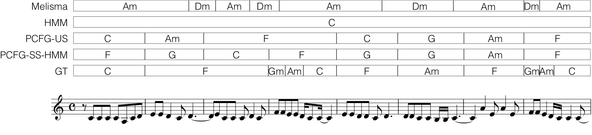
1.3
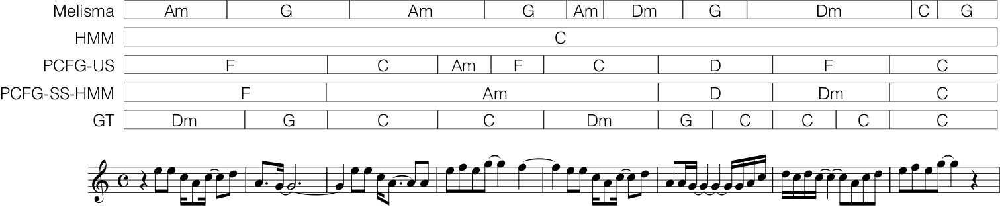
1.4
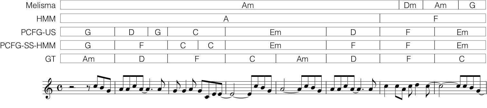
1.5

1.6
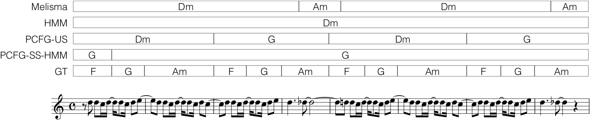
1.7
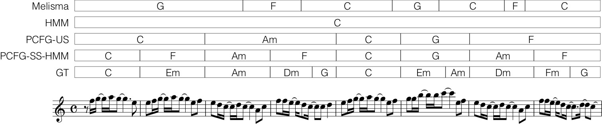
1.8
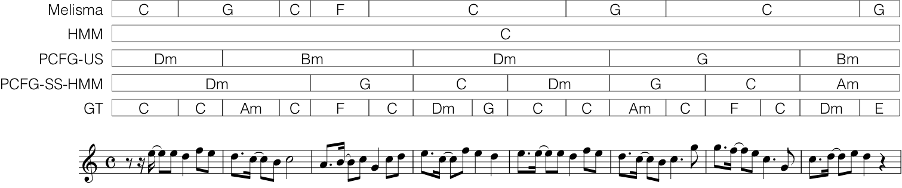
1.9
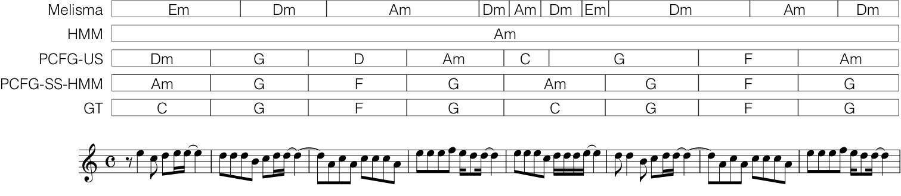
1.10
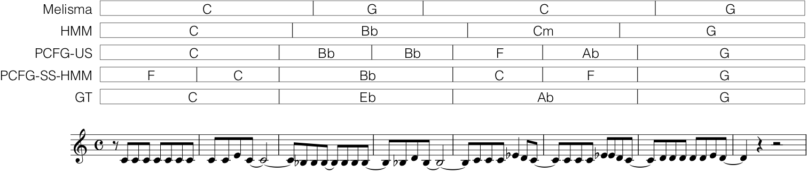
1.11
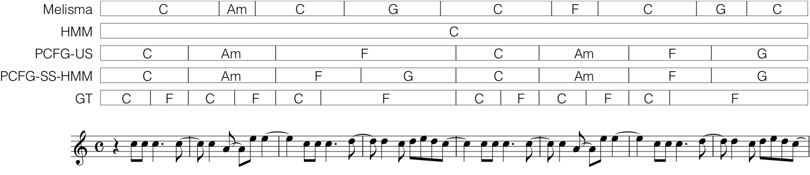
1.12
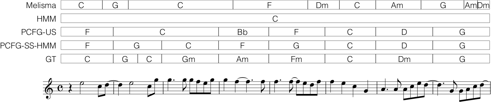
1.13
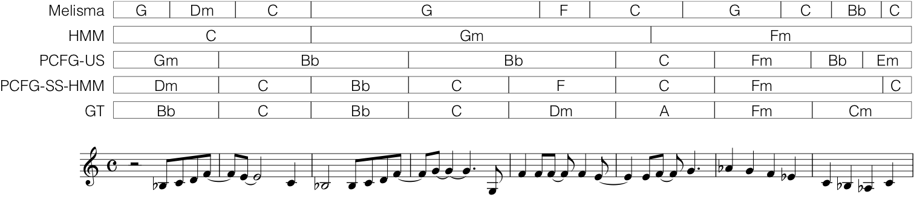
1.14
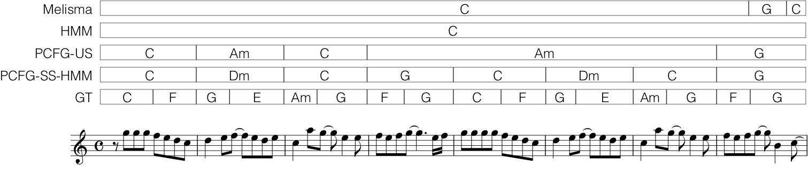
1.15
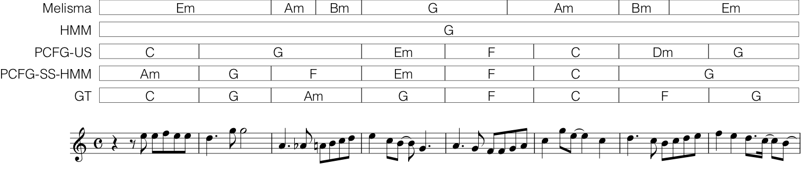
1.16
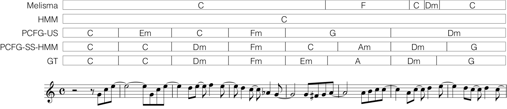
1.17

1.18
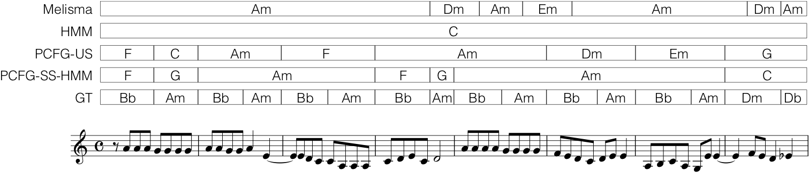
1.19
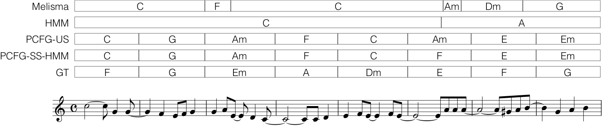
1.20
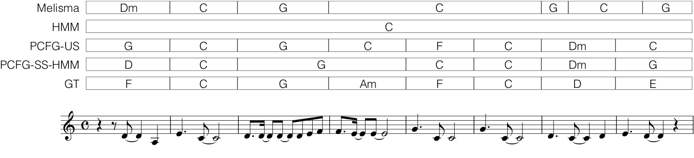
2. Tree structures behind chords
The following figures show the tree structures generated by the PCFG models for melody harmonization.PCFG-US PCFG model obtained by unsupervised learning (Sec. V-A(i), K=12)
PCFG-SS-HMM PCFG model obtained by semisupervised learning with HMM-based initialization (Sec. V-A(iv), K=17)
In the figures, S1, S2, etc. represents nonterminal symbols. For PCFG-SS-HMM, we can identify the commonly known harmonic functions in the leaf nodes: S2 = tonic (T), S1 = subdominant (SD), and S11 = dominant (D). We can also interpret nodes in a higher level of trees as phrases of these functions: S16 = SD-D phrase, S13 = tonic phrase, S10 = T-SD-D phrase, for example. On the other hand, it is not easy to find such simple interpretations for the node labels in the trees obtained by the PCFG-US.
2.1 (for the result of 1.7)
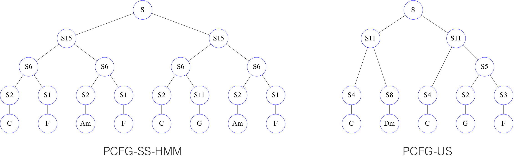
2.2 (for the result of 1.11)
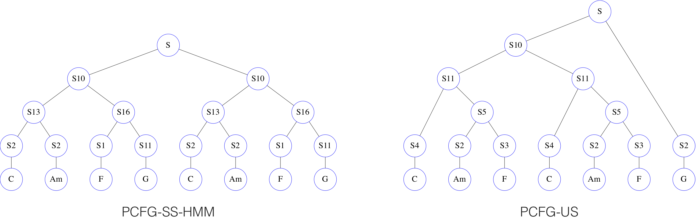
2.3 (for the result of 1.12)
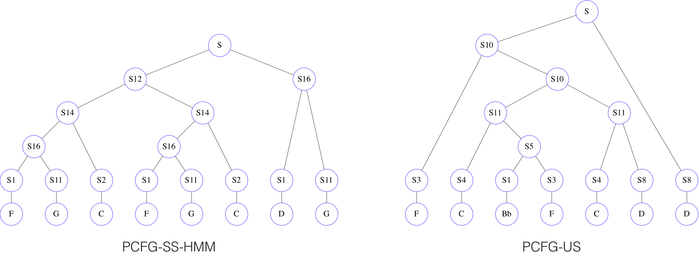
2.4 (for the result of 1.15)
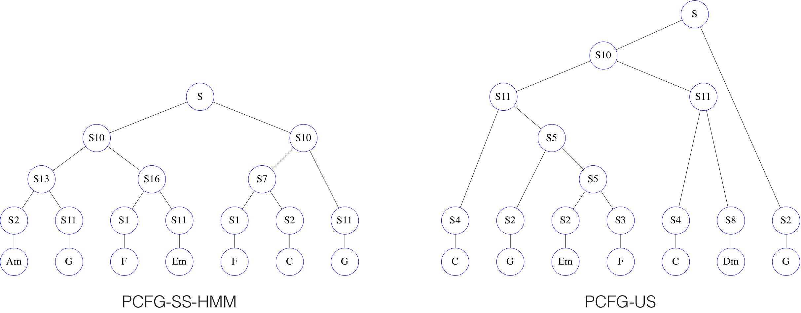
2.5 (for the result of 1.16)
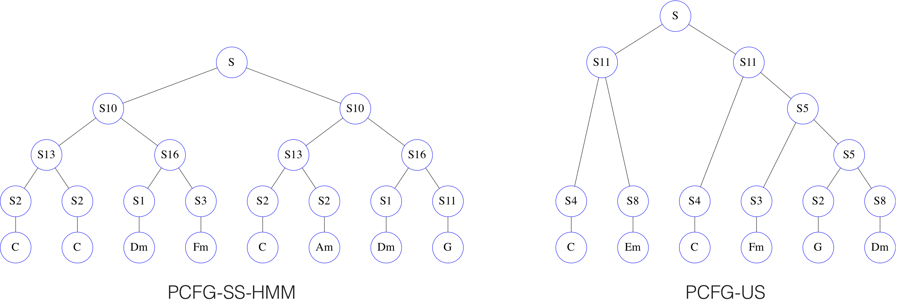